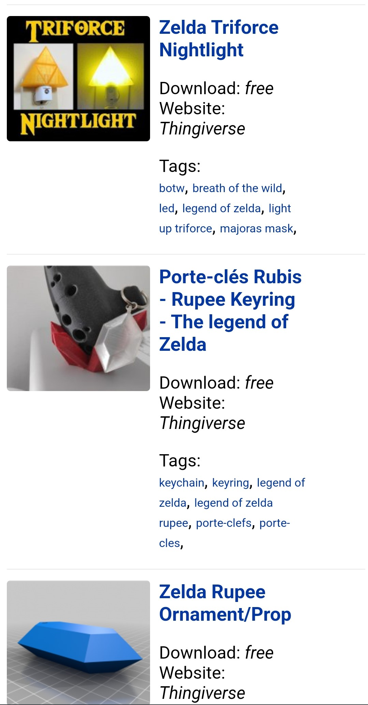

Hick' Law
Samsung's Cite
Samsung has minimized options by using categories for easy readability which allows the user to navigate more quickly on their cite
PARC Contrst
Nintendo's Cite
Nintendo uses a white font against a red background, along with using larger fonts enhances the contrast and readability of the text.
White Space and Clean Design
Yeggi's Cite
Yeggi has many products that it gets the user to choose from. The use of white space very distinctly establishes each individual product on the screen